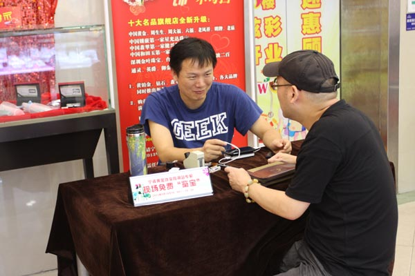

这个夏天，一场欢动全城的购物狂欢又将上演。2014宁波购物节将于8月1日至17日举行，十几大项的系列主题活动精彩纷呈。今年的宁波购物节以"畅享购物、夏逸宁波"为主题，2013年的宁波购物节首次实现了宁波老三区和鄞州、镇海、北仑的六区联动，今年高新区、保税区和象山、奉化也将参与进来。购物节期间将举办"欢乐仲夏夜"、"跟着地铁逛宁波"等活动，还将举行"网络E购会"，以"线上消费、线下体验"为主旨，组织本地知名电商平台参与，集中推出同城购、APP移动客户端应用、线上线下联动消费等惠民促销活动，促进网络消费。
跟着地铁逛宁波
主题活动
欢乐仲夏夜
在舟宿夜江、白沙海鲜码头、金钟广场、渔人码头等海鲜夜排挡组织举办大型美食促销活动，促进夜市经济发展。

商圈嘉年华
城区各大商圈推出特色鲜明、形式多样、创意新颖、辐射力强、汇聚人气的主题营销活动，在规模、特色、优势上做文章，集聚消费人群，激活购物热情。
商超打折季
发动城区各大商场、超市和便利连锁企业开展换购、特卖会、全场折扣等多种形式的促销活动；与轨道交通联动推出购物满额送地铁票等活动。
商街联盟秀
城区特色商业街统一街区造型、统一张贴道旗等标识、统一延长营业时间，开展丰富多彩的夜市经济活动。推出国际国内品牌新品发布会和经典款式展示活动，让市民近距离感受品牌的文化内涵。

惠民社区行
在各地商业示范社区举办蔬菜产地直销、放心平价猪肉、家电维修服务、家政服务上门等惠民活动，提升社区居民便利消费体验。
网络E购会
以"线上消费、线下体验"为主旨，组织本地知名电商平台和通讯企业参与，集中推出网购评价、APP应用、线上线下联动消费等惠民促销活动，促进网络消费、信息消费。
商贸博览会
组织香港时尚珠宝展、休闲博览会、时尚婚纱博览会、家具家装联展、进口商品展示等系列商贸展会，集聚人气、推动消费升级。
商旅缤纷行
组织本地名企开展品牌休闲游等活动，让市民近距离感触本土品牌崛起历程，体验时尚生活品质，进一步增强本土品牌亲和力。通过景区与商圈互动、旅游宣传促销、与周边城市互动等活动方式，推进商旅互动。
商文竞辉映
组织文化场所参与商文互动项目，开展博物馆普及周、非遗技艺展示等活动，提升市民消费层级
商银奖不停
贯穿购物节各类主题活动，以刷卡促消费为主线，采取刷卡抽奖、刷卡立减等促销方式，促进信用消费。